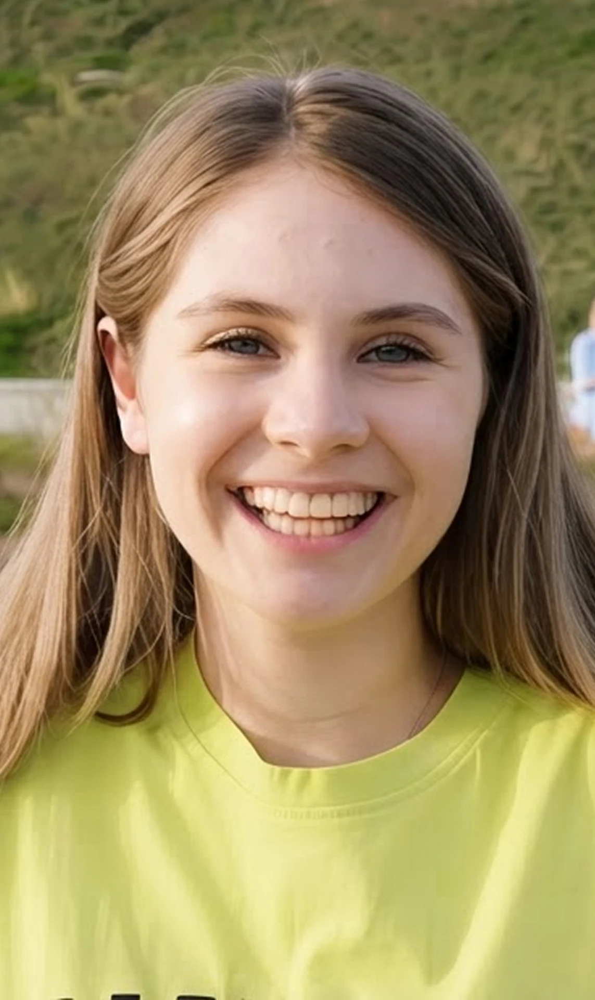

Making a digital banking strategy tangible
A major retail and business bank’s three-horizon digital strategy came to life in a 30-day proposal, built on working prototypes and a board-ready narrative that show how youth, everyday and business banking could look and feel in the future.

Her first account, with her mum alongside, grows into a space that's fully her own.
From her first job to buying a car and a home, her bank keeps pace with her.
Fast loans, simpler payments and AI insights as his business expands abroad.
From strategy to customer experience
The bank had a clear vision for its digital future, but it was still a roadmap. Leadership needed to show what that future would look like for customers, and build a compelling case for it in just one month.
The challenge was to bring a multi-year strategy to life through real customer experiences, giving the board something tangible to explore, evaluate and invest in.
Three customers, three horizons each
The strategy was translated into three customer journeys: a young saver gaining independence, an everyday customer facing major life decisions, and a sole trader growing a business. Each followed the same customer across all three horizons.
Three journeys through the future of banking
Three clickable prototypes, each following one customer through the three horizons, showed how the experience could evolve alongside their life rather than as three separate snapshots of the bank.
Youth · Aisling
From a first account with her mum as guardian to managing her own money and rounding up to support causes she cares about.
Everyday · Ciara
From her first job to saving for a car and buying a home, with spending insights, goals and personalised guidance for big decisions.
Business · Páraic
From a streamlined business hub to faster lending, connected accounting and international growth supported by AI.
A digital strategy brought to life
In 30 days, a multi-year roadmap became a board-ready proposal, giving leadership a concrete way to explore the direction and see how it would translate into youth, everyday and business banking.